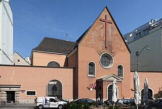
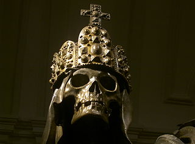

2013-11-21T17:35:16
The 9th World Assembly of the global interfaith network Religions for Peace got properly underway on 20/11/2013. I say properly, because there were some pre-Assembly events that I didn’t attend. I’m here as a representative of the Australian Partnership of Religious Organisations (APRO), of which I am a member on behalf of the Australian Sangha Association and the Federation of Australian Buddhist Councils. The theme of this year’s conference is “Welcoming the Other”.
I’ve been very kindly and warmly received in Vienna, firstly by some members of the local Buddhist community, who took me on my first ever tour of catacombs; an experience that was enlivened by the breezy humour of the tour guide, who took obvious delight in discussing of the plagues and wars that have populated the catacombs; and, even better, the growing pollution of rotting corpses that required the catacombs be emptied. Down there, among the piles of bones, the mummified corpses of long-dead bishops, and the distorted gargoyles of horror, I could not help but feel that I had discovered the unconscious of Freud’s Vienna.
My accommodations have been no less intriguing, with an equally easygoing acceptance of light and dark. I’m at the famous Capuchin Monastery, right in the heart of Vienna. There’s a lovely small community of Franciscan friars here, about 12 or so. Mostly they don’t speak much English, but there’s a couple of Indian monks who are quite fluent. But language doesn’t matter so much when the people are so warm and friendly. There’s plenty of smiles and laughter over breakfast, and a manifest feeling of contentment. The monks live very simply, especially considering the heritage of the monastery: some bread and cheese for breakfast; clean, basic accommodation; and a regular program of service for prayer. They very kindly invited me to take part in their services, but I declined, as I will mostly be away at the conference.
Perhaps it’s easier to be light of heart when you have under your feet the desiccated corpses of kings. This monastery is most famous as the resting place of the Hapsburgs, the rulers of the mighty Austrian Empire for 500 years. Now they have gone the way of all kings, succumbed to the one monarch none could overcome: Lord Death. They’ve been entombed in increasingly elaborate sacrophogi of tin; gorgeous figures, grinning skulls, angels and swords adorn them. Once rulers of the wide earth, now they are the objects of school excursions, with earnest teachers and bored, uncomprehending children more interested in making click-clack noise in the echoing corridors with their stone floors.
If any of the monks were dubious about the sudden arrival of this strange and very large Australian Buddhist monk, here to attend an event sponsored by the Saudis, they didn’t show it. But they were, so I was told, pleased to see that in the daily paper there was a message from Pope Frances, giving his blessing for our conference. So that’s all right, then.
As for the conference itself, it is held in the Vienna Hilton, and many of the attendees stayed there. The main organisers of the event are Religions for Peace, but the co-sponsors are the Kaiciid Dialogue Centre, sponsored by King Abdullah of Saudi Arabia. This centre was established here in Vienna as a world interfaith hub. Obviously, this raises some interesting questions. Saudi Arabia was one of 15 nations identified by the US Commission on International Religious Freedom as being a “Country of Particular Concern”. The report found that:
During the reporting period, systematic, ongoing, and egregious violations of religious freedom continued in Saudi Arabia despite improvements. More than 10 years since the September 11, 2001 attacks on the United States, the Saudi government has failed to implement a number of promised reforms related to promoting freedom of thought, conscience, and religion or belief. The Saudi government persists in banning all forms of public religious expression other than that of the government’s own interpretation of one school of Sunni Islam; prohibits churches, synagogues, temples, and other non-Muslim places of worship; uses in its schools and posts online state textbooks that continue to espouse intolerance and incite violence; and periodically interferes with private religious practice. There have been numerous arrests and detentions of Shi’a Muslim dissidents, partly as a result of increasing protests and demonstrations related to 2011 uprisings in the region, and Ismaili Shi’a Muslims continue to suffer repression on account of their religious identity. Members of the Commission to Promote Virtue and Prevent Vice (CPVPV) continue to commit abuses, although their public presence has diminished slightly and the number of reported incidents of abuse has decreased in some parts of the country. In addition, the government continues to be involved in supporting activities globally that promote an extremist ideology, and in some cases, violence toward non-Muslims and disfavored Muslims.
The report acknowledges the interfaith work done internationally by the King, while noting that since it began in 2006 it has not been reflected in any meaningful improvements in his own country.
So, we all know this: Saudi Arabia is one of the world’s most repressive counties when it comes to religion and related matters. So what are they doing taking centre stage in the world interfaith space? Is this nothing more than a hypocritical attempt to whitewash their international reputation while avoiding the real problems? Or is it a genuine attempt to move towards openness, setting an example internationally for much-needed reforms at home? I don’t know, and it would seem that Religions for Peace is committed, for the time being anyway, to furthering a partnership. They’re smart people, with no illusions, and so I don’t dismiss it out of hand. At the same time, the Saudis have buckets and buckets of money, and that is the most basic corrupting influence on all genuine spiritual movements.
In fact the Saudi presence at the Religions for Peace conference is muted. This stands in contrast with the pre-conference event organised by Kaiciid, which some reports say was dominated by ostentatious displays of wealth, and platitudes by Saudi princes on how they will have to take the lead on interfaith.
There was none of this at the actual RfP conference. There has been a nicely representative mix of speakers, plenty of women taking part; perhaps a slight under representation of East Asian religions, which was acknowledged.
In the opening session, the delegates were asked to accept the new nominated committees. And a remarkable thing happened. The floor was invited to make suggestions, and one suggestion was: that the committee include a young person. And, astonishingly, the panel said, “Fine, let the Youth Group nominate their own representative.” Then there was another committee to elect, and the panel said, “Well, we’ll probably want a young person for that as well.” Then someone said, “But shouldn’t we have two young people on each committee, male and female”; and this was accepted just as readily. I don’t think I’ve ever witnessed such an accepting and meaningful display of genuine democracy in action. That, more than anything, gave me hope.
The speeches themselves were for the most part unremarkable, and I felt that far too much time was taken with matters of too little substance. A great speech should be either informative or inspirational, and these were for the most part neither.
Having said which, the presentations touched on some important matters. For me perhaps the most memorable was a speech by a Japanese delegate, who reflected along the lines of Carl Sagan’s pale blue dot. He noted that Voyager 1, which took the famous photo of earth, has now left our solar system. All around, for as far as we can see, space is cold, dark, and lifeless; the only place we can live is here. And we have disrespected and exploited our tiny precious planet, using up everything we can get our hands on: all for what, exactly?
One of the major themes, which was the focus of the excellent speech by RfP’s Secretary-General, Dr. William F. Vendley. He spoke about the challenges and development of interfaith in the decades since RfP’s inception; but the defining focus of his speech was the idea of a “rising tide” of hostility. He argued that since the previous conference in 2006 we have seen ever greater intolerance and religious divisiveness. He offered some troubling statistics: 3/4 of the world now live in countries with high levels of restriction on religion, with the percentage of countries with such high levels of intolerance rising for 29% in 2007 to 40% in 2011.
Worrying as this is, I was not convinced. In the same period we have seen great and meaningful progress, for example in the acceptance of same sex marriage, or the role of women in religious life. It seems to me that these trends are not separate. Our times are not characterised by a greater repression in religious matters, but a greater polarisation. The good get better, while the worse get worse; and the gulf between the two, which once we could hide beneath the formalities of ritual and custom, has become so vast as to paralyse, quite literally: think of the US government shut-down, the horrific morasses in Afghanistan, Iraq, and Syria, climate change reform, or, within my own tradition, the continuing failure by some monks to accept bhikkhunis. In all these cases, and many more, we see an ideological gulf that has religion as a driving force.
And the source of the polarisation, underlying all these, is change. Accelerating, chaotic, destablizing change. Change that uproots everything, trashes all that is of value, and casually devastates family, faith, and culture in its blithe indifference. Modernity is experienced by all too many people as a waking nightmare: children continue to die in their millions due to entirely preventable causes. Those with the money and technology to make a difference waste it on guns and geegaws, obsessed with accumulating more and more. Why do we continue to be surprised that people cling so desperately, so irrationally, to an imagined past?
There was an unexpected contribution from one of the Islamic leaders. There had been some confusion earlier on the subject of circumsicision, whether it referred to male or female. Dr. Mustafa Ceric, who in good cheer and self-deprecating style, informed us that as the former Grand Mufti of Bosnia and Herzegovina, and currently “Grand Mufti at large”, he had the authority to issue fatwas for all of us. And so he did, two of them. One, that female gential mutilation was wrong, that it contadicted Islamic principles, and that it should be banned everywhere; and two, that all Muslims should work for interfaith harmony. Those are my kind of fatwas!
The final session of the day was a commission on “Human Development that Respects the Earth”. This was far more satisfying than the plenary sessions; we had spilt into four different sessions, so there was much greater participation, and many interesting voices. An emerging theme was the UN’s Millennium Development Goals, for which the deadline is approaching in 2015. These have been partially successful, with a global reduction of extreme poverty by half (yay!), improved access to drinking water for 2 billion people, gains in the fight against malaria and TB, and more. Areas noted as needing improvement are the environment, HIV, maternal and child survival, and education.
But for me the most urgent presentation came from Dr. Nigel Crawhall, director of the Indigenous Peoples of Africa Co-ordinating Committee, who spoke on global warming; in fact he had just come from the discussions at Warsaw. (I chatted with him after the presentation; it tuns out he’s a Buddhist from South Africa, who’s connected with the community of my friend and sometime bloggist Thanissara.) It was fascinating to hear of the energy that is in this space at the moment; the desperation of the activists, the despair showing even in leaders like Christiana Figueres; and the glazed denial of the technocrats. Every time I get in a conversation with knowledgeable people on this topic, I hear numbers that are just unbelievable. But you hear them so many times, from such reliable sources, that they start to become normal. Like, for example, the UN report that predicted numbers of displaced people by 2020 at 250 million. Or the prediction that the oceans will be fished out by 2030.
The coming century will, I believe, see the end of our civilisation in any recognizable form. I simply can’t see any other outcome, given the dogged commitment to inaction on the part of everyone who matters. At last, Christiana Figueres has started to go beyond the polite fiction that having a little tax or sponsor some solar cells will save us. It won’t. The only thing that really counts is that we leave the coal in the ground. If we don’t do that, we’re finished. And, as crucial as all the other issues that we discussed are, none of it really matters if our environment collapses. None of us will have education, or health care, or reliable food and water, or jobs.
It is no longer a question of whether climate change is real. Nor is it a question that it it will go over the long-cherished limit of 2°C. Nor is it a question that this will be catastrophic. The only questions are how bad will it be, and what can we do to minimise it. The latest IPCC report suggests that we may well see a 4.5°C rise this century; I think this is too conservative; analysts not committed to the IPCC’s consensus approach frequently speak of 6°C this century, and this is by no means the maximum. And of course, that’s just this century: it keeps going up for a long time.
What can we do? I don’t know. For a long time I have wanted to write more on this subject, but it is so big and so overwhelming that I have not known how to start. But here’s one idea: go to a monastery and stay in a cave. It may turn out to be a useful survival skill.
Nigel said that the message they had received from the UN was that politics had failed. Decades of negotiations have led nowhere. Figures at the highest levels are now looking to religion for a solution. Despite all of the problems that religions have faced, and continue to struggle with, it is still the case that religions speak to the people in a way that no other can. And we have the potential, at least, to speak with a moral authority, to draw a line in the sand. One speaker spoke of the “madness, the madness!” of our world, in that we have allowed economics to triumph over life. For all the distortions of their tiny parochial moralities, their embarassing obsessions with controlling sex and women, at the heart of all religions there is the respect for life. And in that, perhaps, we may find hope.
{kind=link}